Spojenci
Aliance
Spojenci ve druhé světové válce byla koalice mocností válčících během druhé světové války proti mocnostem Osy. Jinak byly nazývány Spojené národy podle mezinárodní organizace založené po válce. Na začátku války, 1. září 1939, se spojenci skládali z Francie, Polska a Spojeného království a jejich současných, nebo dřívějších kolonií. Ke spojencům se po zahájení německé invaze do severní Evropy připojily Nizozemsko, Belgie, Řecko a Jugoslávie. Poté, co byl Sovětský svaz napaden Německem, mu byla nabídnuta vojenská pomoc od Spojeného království. Spojené státy po celou dobu poskytovaly Spojencům válečný materiál a peníze a oficiálně se připojily v prosinci 1941 po japonském útoku na Pearl Harbor. Čína již dříve byla ve válce s Japonskem od incidentu na mostě Marca Pola v roce 1937, ale oficiálně se připojila ke Spojencům až v roce 1941.
Válka v Tichomoří
Pear harbor
7. prosince 1941 se z japonských letadlových lodí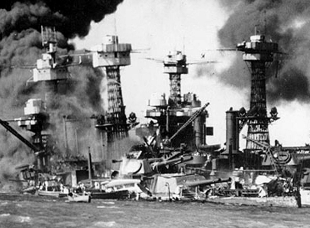 jež nepozorovaně připluly do blízkosti Havajských ostrovů, vznesly stovky japonských letadel, které krátce před osmou hodinou podnikly ničivý nálet na americkou námořní základnu v Pearl Harboru. Během dvouhodinového útoku byla potopena nebo vážně poškozena řada amerických bitevních lodí a jiných plavidel. Po tomto zákeřném napadení vyhlásily USA Japonsku válku. Na stranu Japonska se o čtyři dny později přidaly také Německo a Itálie.
Už před vstupem do konfliktu USA zastávaly jen formálně neutrální postoj k válčícím stranám. V březnu 1941 prezident Roosevelt podpořil Spojence, když prosadil Zákon o půjčce a pronájmu umožňující Britům, Číňanům a Sovětům odebírat americké zbrojní a jiné dodávky bez nutnosti okamžitého zaplacení. Konečně po japonském přepadení Pearl Harboru se ohromné americké průmyslové kapacity plně zapojily do boje proti Ose.
Midway
Po symbolickém Doolittlově náletu na Tokio japonské velení rozhodlo o obsazení ostrovu Midway. Na konci května vyplula japonská flotila pod velením admirála Jamamota vstříc Midwayi. Japonci usilovali o další překvapivý úder, avšak Američané krátce předtím prolomili japonský kód a byli tak zpraveni o jejich úmyslu.
4. června 1942 se Američanům podařilo v bitvě u Midway rozdrtit japonské letadlové lodě, jež tvořily jádro japonských námořních sil, načež Jamamoto nařídil ústup. Po pouhých šesti měsících skončilo období japonských úspěchů, neboť císařské námořnictvo se z této porážky, nikdy zcela nevzpamatovalo.
Vylodění v Normandii
Den D
Pláž Omaha
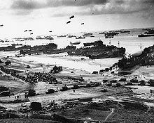V Den D zaútočila nezkušená 29. pěchotní divize posílená o devět rot U.S. Army Rangers přesměrovaných z Pointe du Hoc na západní polovinu pláže. Zkušené 1. pěší divizi byla svěřena východní polovina. Bylo naplánováno, že počáteční vlny útoku, které se skládaly z tanků, pěchoty a ženistů, ochromí pobřežní obranu a umožní tak přistání větším lodím a následujícím invazním vlnám. Hlavním cílem bylo zajistit předmostí o hloubce osmi kilometrů mezi Port-en-Bessin a řekou Vire.
Pláž Utah
pláž Utah, bylo kódové označení pro nejzápadnější z pláží, na které se vylodily spojenecké síly během Dne D jako součást bitvy o Normandii 6. června 1944. Do invazních plánů byla tato pláž přidána až na samém konci, když se zjistilo, že je k dispozici více vyloďovacích člunů. Vyloďovací pláž byla přibližně 5 km dlouhá a nacházela se mezi Pouppeville a vesnicí La Madeleine, která se stala opěrným bodem severního křídla spojenecké ofenzivy podél levého břehu estuáru řeky Douve. Přestože se dostala 4. pěchotní divize v podstatě mimo kurz, vylodila se v porovnání s krutými boji na Omaha Beach za relativně malého nepřátelského odporu.
Bitva v Ardenách
Německá ofenzíva
Útok začal 16. prosince 1944 v 5:35 hodin ráno, kdy zataženou oblohu rozzářila mohutná dělostřelecká palba 2 000 německých děl. Američané byli absolutně zaskočeni počátkem a místem útoku.
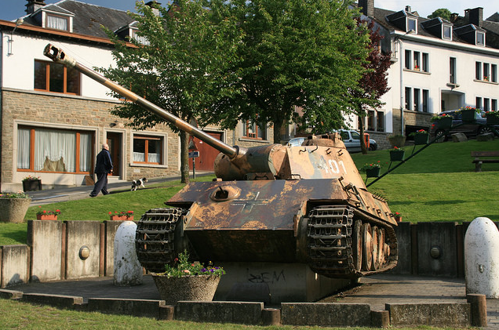 Američané po objevení prvních diverzantů začali provádět masové kontroly, každé auto bylo zastavováno a všichni včetně velitelů byli podrobováni podrobným dotazům z amerického způsobu života. Kontroloři byli ovšem natolik důslední, že jen v prvních dvou dnech zatkli třikrát víc mužů, než kolik bylo skutečně diverzantů.
Obavy z hrozby atentátu navíc částečně paralyzovaly štáby nejvyšších velitelů. Velkou výhodou Němců se v prvních dnech stalo počasí, které znemožnilo Spojencům nasadit proti německým kolonám letectvo nebo alespoň zajistit strategické informace o velikosti útoku.
Spojenecká protiofenzíva
Počátkem ledna 1945 se Spojencům podařilo vrátit hranice linií přibližně do oblasti, kde byly před zahájením ofenzivy. Marný německý pokus zvrátit výsledek na západní frontě stál německou stranu minimálně 67 461 mužů, Američané přišli minimálně o 80 987 mužů a Britové o 1 408. Materiální ztráty byly na obou stranách obrovské,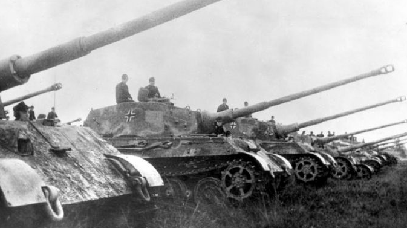 ale oproti Němcům mohli Američané ztráty rychle nahradit. Ofenziva na jedné straně na několik měsíců zpomalila spojenecký postup na západní frontě, na druhé straně ale vedla k naprostému vyčerpání Německa.
V boji byly nasazeny nové zázračné zbraně Německé říše. Spojenecká početní převaha tyto moderní zbraně převálcovala. V boji se například objevil první proudový stíhač s označením Messerschmitt Me 262, který létal rychlostí až 896 km/h, dále například nejtěžší tank své doby PzKpw VI Tiger II či nejtěžší sériově vyráběné obrněné vozidlo, stíhač tanků JgdPz VI Jagdtiger.
Po znovudobytí Ardenské oblasti se začala objevovat strašlivá mementa německého postupu. Německé jednotky byly podle Peipera instruovány, aby zbytečně nebraly zajatce. Jedinou jednotkou, která se chovala tímto způsobem, byla právě Peiperova, která spáchala mimo jiné i tzv. Malmédský masakr, během něhož došlo k povraždění několika desítek zajatých amerických vojáků.
Atomové bombardování
Hirošima
Pro 6. srpen byla Hirošima hlavním cílem první atomové mise. Tento den byl vybrán, protože cíle byly předtím zahaleny mraky. B-29 Enola Gay pod vedením pilota plk. Paula Tibbetse, vzlétla z letecké základny Tinian v západním Pacifiku.
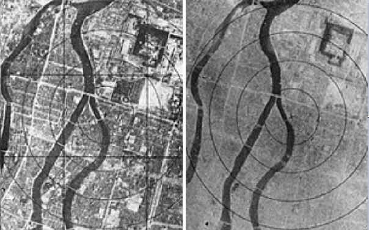 Asi hodinu před bombardováním zachytil japonský radar americká letadla blížící se k jihu Japonska. Výstraha byla odeslána do mnoha měst, včetně Hirošimy. Radiolokátor v 8:00 hodin v Hirošimě určil, že počet přilétajících letadel je velmi malý a byl vyvolán letecký poplach. Aby Japonci šetřili palivo, rozhodli se neposlat stíhačky proti tak malé formaci. Civilní rádio vysílalo upozornění a radu, aby se lidé schovali do protileteckých krytů, jestliže by byly B-29 skutečně spatřeny.
V čase 8:15, byla první atomová bomba známá jako „Little Boy“, shozena z letadla padala k předurčenému místu exploze ve výšce asi 600 metrů nad městem. Výbuch byl rovnocenný asi 13 kilotunám TNT (54 TJ). (Zbraň U-235 byla považována za velmi neúčinnou, štěpení proběhlo pouze u 1,38% materiálu) Rádius celkového zničení byl asi 1,6 kilometru s následným požárem v okruhu 11 km². Američané odhadovali, že 12km² města bude zničeno.
Nagasaki
Asi v 7:50 hodin japonského času byl v Nagasaki vyhlášen letecký poplach, ale byl odvolán v 8:30. Když byly v čase 10:53 zahlédnuty pouze dvě B-29 Superfortress, tak Japonci zřejmě předpokládali, že letadla jsou pouze na průzkumu a v dalším alarmu nepokračovali. V 11:01, se v mracích na Nagasaki objevila „trhlina“ dovolující bombometčíkovi kpt. Kermitu Beahanovi zahlédnout požadovaný cíl. Bomba „Fat Man“, obsahující 6,4 kg plutonia-239, byla shozena do městské průmyslové části, přesně v polovině cesty mezi Mitsubishi Steel a Arms Works na jihu a Mitsubishi-Urakami Ordnance Works (závody pro výrobu torpéd) na severu. Bomba však dopadla téměř o tři kilometry dál, než bylo očekáváno. Následná exploze byla rovna asi 21 kilotunám TNT (88 TJ). Exploze vyvolala teplotu odhadovanou na 3900 °C a vítr o odhadované rychlosti 1005 km/h.
Kapitulace
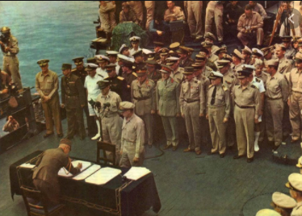Až do 9. srpna americký válečný úřad trval na jeho čtyřech podmínkách pro kapitulaci. Ten samý den Hirohito přikázal Kidovi: „Rychle dej situaci do pořádku , protože Sovětský svaz nám vyhlásil válku.“ Poté svolal císařskou konferenci, na které oprávnil ministra zahraničí Tōgōa informovat Spojenecké síly, že Japonsko přijme jejich podmínky pouze v tom případě, že deklarace „neudělá žádný kompromis vůči požadavku o výsadě Jeho Veličenstva jako hlavního panovníka.“ Dne 12. srpna císař informoval svou rodinu o svém rozhodnutí vzdát se. Když Spojenecké síly, jak se zdálo, nechaly požadavek o záchraně císařského trůnu netknutý, Hirohito 14. srpna ve svém projevu prohlásil kapitulaci, který se další den vysílal japonskému národu i navzdory krátkým odbojům militaristů, kteří se odmítli vzdát. V jeho přepisu vojákům a námořníkům, doručeným 17. srpna, zdůraznil dopad Sovětského svazu na jeho rozhodnutí o kapitulaci, vynechávající jakoukoliv zmínku o atomových bombách.
Letectvo
B-17E Flying Fortress
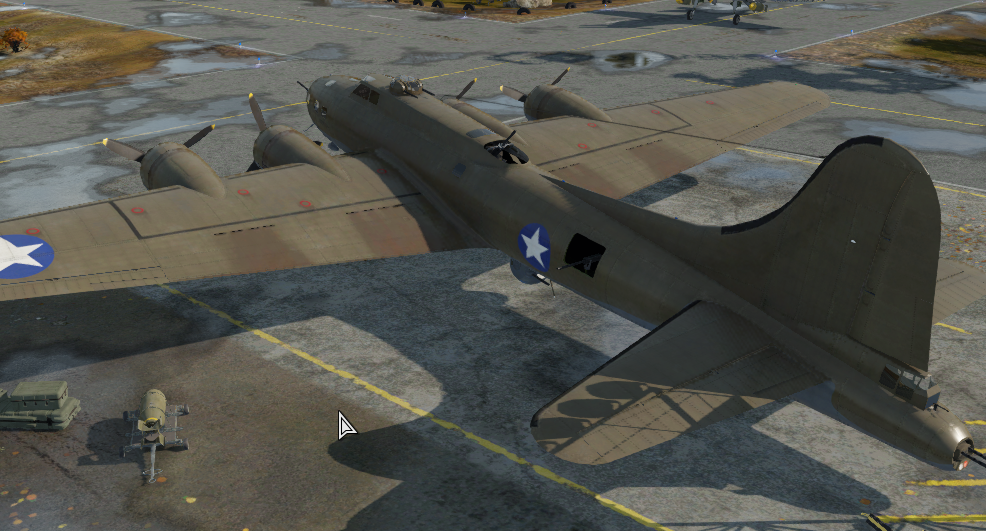
B-17E Flying Fortress byl devítiposádkový dálkový bombardér který letěl rychlostí až 496km/h
Historie
Výroba B-17E dosáhla 512 letounů, čímž se B-17E stal první sériově vyráběnou variantou Létající pevnosti. Továrny Boeingu tuto výrobu nestíhaly, a tak B-17E vyráběly také firmy Lockheed a Douglas. Douglas postavil novou továrnu na výrobu Flying Fortress a Boeing postavil další továrnu jen pro výrobu B-17. V roce 1942 bylo 45 letounů B-17E Flying Fortress převedeno do Královského letectva (RAF). Byly označeny jako Fortress IIA a používalo je Pobřežní velitelství k provádění protiponorkových hlídek.
P-38 Lightning
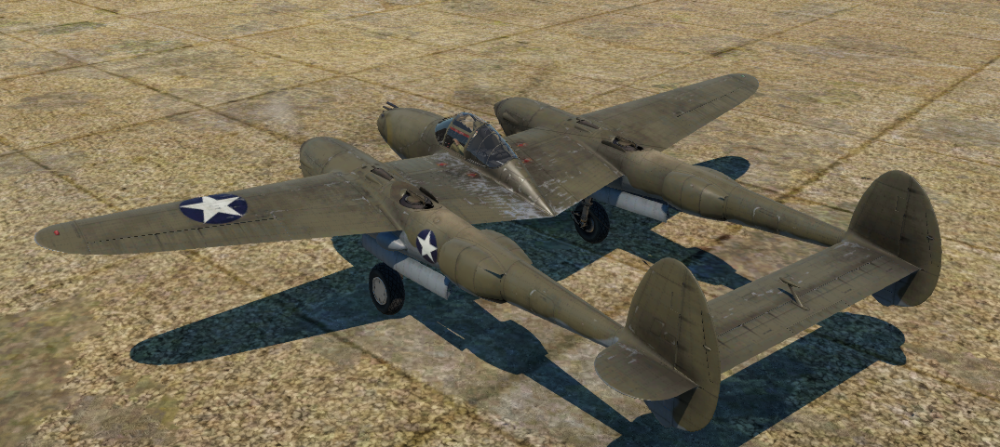
P-38 Lightning byl dvoumotorový záchytný stíhač který letěl rychlostí až 631km/h
Historie
P-38 byl celokovový, dvoumotorový stíhací letoun s aerodynamickou konstrukcí.Jednou z charakteristických vlastností P-38 byl jeho neuvěřitelně dlouhý dolet. Nejvýjimečnější ukázkou schopností P-38 byla operace Pomsta - mise s cílem zabít geniálního námořního stratéga japonského císařského námořnictva a strůjce útoku na Pearl Harbor, admirála Isokoru Jamamota. Vysoce tajný zásah z 18. dubna 1943 úspěšně srazil dva bombardéry G4M1 - jeden přepravoval admirála Jamamota, druhý šéfa jeho štábu. V letech 1942 až 1943 vyrobila společnost Lockheed 1462 letounů P-38. Některé modely F a G sloužily v bojových operacích ještě v roce 1945. Nakonec byly vyřazeny z provozu v roce 1949.
P-51 Mustang
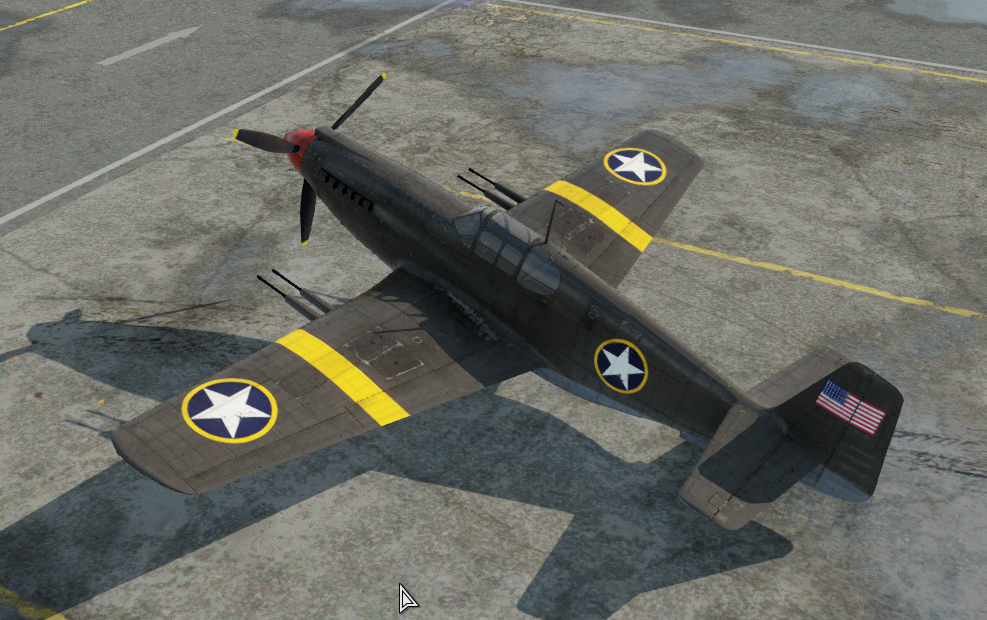
P-51 Mustang byl jednomotorový stíhač který letěl rychlostí až 630km/h
Historie
Díky podepsanému zákonu Lend Lease Act mohla americká armáda objednala 150 Mustangů jménem Britů. Tyto letouny byly vybaveny čtyřmi 20mm kanóny Hispano Mk.II umístěnými v křídlech. Do RAF se dostalo pouze 93 nových Mustangů. Americká armáda si jich pro sebe stáhla 55 a okamžitě se dočkaly služby. Dva si ponechala společnost North American Aviation pro vnitřní potřebu. Tyto P-51 Mustangy se poprvé dočkaly služby 9. dubna 1943 . postupem času byly tyto P-51 Mustangy přestavěny na průzkumné letouny. kamera byla umístěna v levém okně za pilotem. Tyto letouny sloužily až do konce roku 1944 a nadále plnily roli útočných a průzkumných letounů.
Těžká technika
M4A2 Sherman
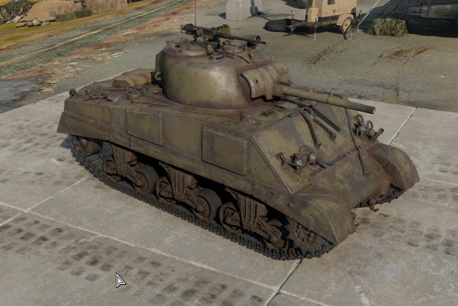
M4A2 Sherman byl devítiposádkový dálkový bombardér který letěl rychlostí až 496km/h
Historie
Výroba B-17E dosáhla 512 letounů, čímž se B-17E stal první sériově vyráběnou variantou Létající pevnosti. Továrny Boeingu tuto výrobu nestíhaly, a tak B-17E vyráběly také firmy Lockheed a Douglas. Douglas postavil novou továrnu na výrobu Flying Fortress a Boeing postavil další továrnu jen pro výrobu B-17. V roce 1942 bylo 45 letounů B-17E Flying Fortress převedeno do Královského letectva (RAF). Byly označeny jako Fortress IIA a používalo je Pobřežní velitelství k provádění protiponorkových hlídek.
M36 Jackson
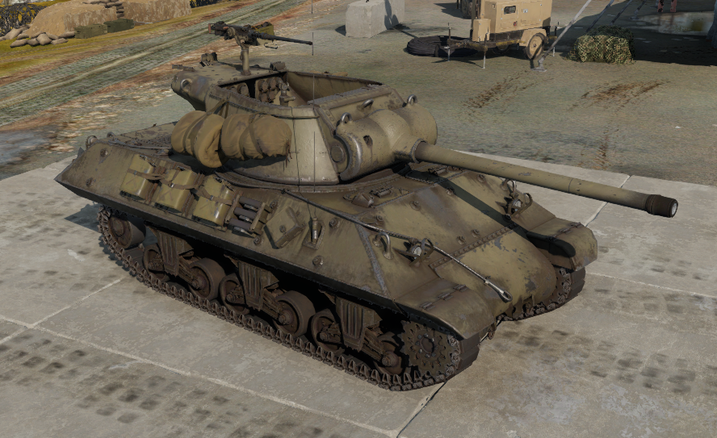
M36 Jackson byl devítiposádkový dálkový bombardér který letěl rychlostí až 496km/h
Historie
Výroba B-17E dosáhla 512 letounů, čímž se B-17E stal první sériově vyráběnou variantou Létající pevnosti. Továrny Boeingu tuto výrobu nestíhaly, a tak B-17E vyráběly také firmy Lockheed a Douglas. Douglas postavil novou továrnu na výrobu Flying Fortress a Boeing postavil další továrnu jen pro výrobu B-17. V roce 1942 bylo 45 letounů B-17E Flying Fortress převedeno do Královského letectva (RAF). Byly označeny jako Fortress IIA a používalo je Pobřežní velitelství k provádění protiponorkových hlídek.
M6A1 Dreadnought
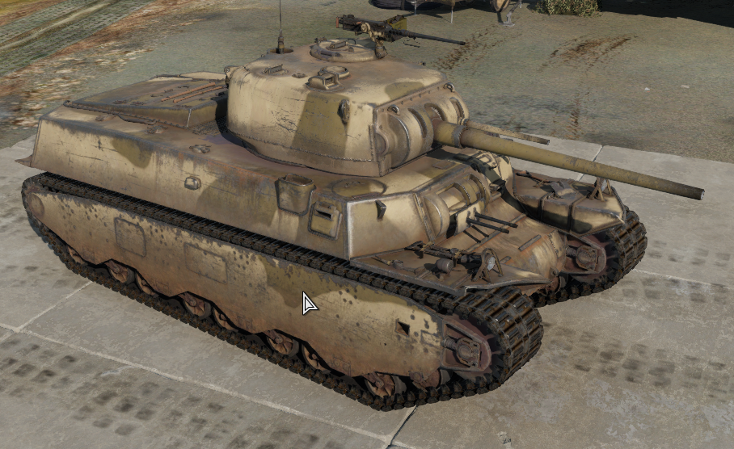
M6A1 Dreadnought byl devítiposádkový dálkový bombardér který letěl rychlostí až 496km/h
Historie
Výroba B-17E dosáhla 512 letounů, čímž se B-17E stal první sériově vyráběnou variantou Létající pevnosti. Továrny Boeingu tuto výrobu nestíhaly, a tak B-17E vyráběly také firmy Lockheed a Douglas. Douglas postavil novou továrnu na výrobu Flying Fortress a Boeing postavil další továrnu jen pro výrobu B-17. V roce 1942 bylo 45 letounů B-17E Flying Fortress převedeno do Královského letectva (RAF). Byly označeny jako Fortress IIA a používalo je Pobřežní velitelství k provádění protiponorkových hlídek.